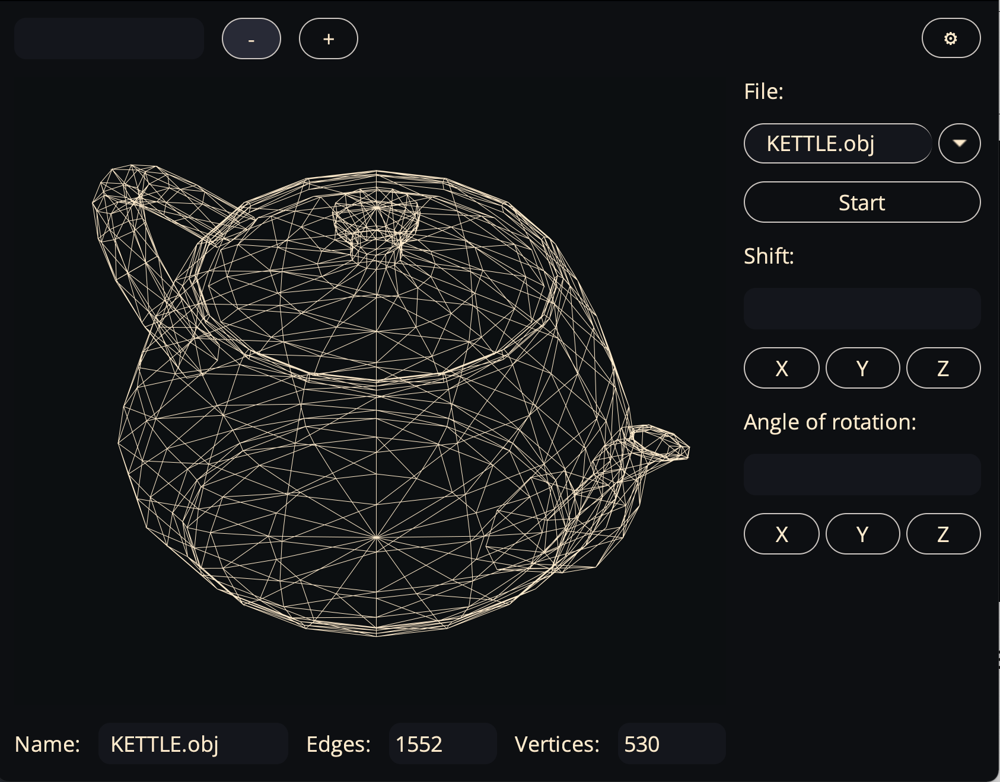
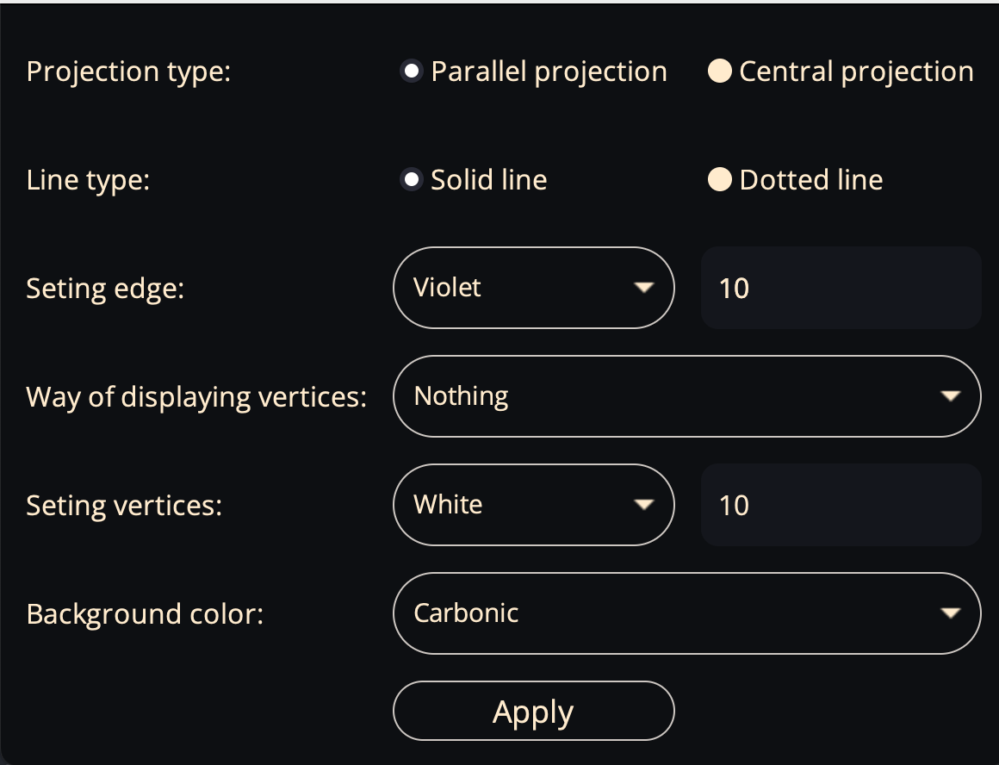

DOCUMENTATION 3D_VIEWER_V1.0
LET'S GO!
3D_VIEWER_V1.0 - is an application that allows you to view 3D models in parallel and central projection.

BASIC APP FUNCTIONS:
- Window for selecting and entering the name of the .obj file.
- Object moving by oX, oY, oZ.
- Object rotation by oX, oY, oZ.
- Object approximation by oX, oY, oZ.
- Model information: number of points and edges.
- Editor settings
FINISHED MODELS:
- BIBICA.obj
- BUNNY.obj
- CUB.obj
- DOMIC.obj
- GNOME.obj
- GOURD.obj
- KETTLE.obj
- LAMP.obj
- OCTAIDER.obj
- TETRAIDER.obj
HOW TO USE:
- To choose a model, you need to add or select its name.
- For the model to appear on the screen, press the "START" button.
- To move, rotation the model, you need to enter a value in the box and click on the axis button "oX",
"oY", "oZ".
- To scale the model, you need to enter a value in the box and click on the axis button "-", "+".
- To change the settings, you need to click on the button "SETTING".
RECOMENDATION:
- Don't enter invalid/empty files. Example: ".obj".
- Don't use large files. Up to 3 Mb.
- Set correct moving, rotate, and scale values. Example: "10 - oX".
LET'S TALK ABOUT SETTING
Setting - This is a feature of the editor that allows you to customize it.

HOW TO USE:
- Window for selecting and entering the name of the .obj file.
- Object moving by oX, oY, oZ.
- Object rotation by oX, oY, oZ.
- Object approximation by oX, oY, oZ.
- Model information: number of points and edges.
- Editor settings
TYPES OF PROJECTION:
- "The Parallel projection" - wis a type of projection that uses parallel projecting rays.
- "The Central projection" - of a point is the point of intersection of the projecting line passing
through the projection center and the projection object (point) with the projection plane.
You can choose the SOLID or DOTTED line.
TYPES OF COLORS:
- GOLD - it is this is the main color for line.
- WHITE.
- VIOLET.
- CARBONIC - it is this is the main color for background.
- WAVE - color reminiscent of the bottomless ocean.
- DRACULA - color taken from the most popular theme for VSCode "Dracula".
You can set the line and point thickness.
RECOMENDATION:
- don't enter thickness values. Example: term: -1221312 or 100
- maximum thickness values = 50
BY COMEDY WOMAN TEAM